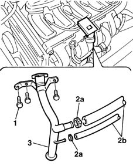

1084A22 engine oil filler - r r
- Path
- Procedures > 10 ENGINE UNIT > 1084 ENGINE LUBRICATION SYSTEM > 1084A indicators/check devices > 1084A22 engine oil filler - r r
- Kind
- repair procedure (removal / refitting; the operation number is the code)
- Applies to
- engines: 1.6 16v; all production periods
- Interactive page
- https://sloeber94.github.io/elrnDB-fMltpl/en/#/2891316
Applies to: engines: 1.6 16v; all production periods
 Removing
Removing
 Refitting
Refitting1. Undo the oil filler fitting bolts.
2. Open the clips (1a) and disconnect the pipes (1b).
3. Remove the filler fitting and recover the lower seal.

Applies to: engines: 1.6 16v; all production periods
Refitting
RemovingReplace the lower fitting seal.
Fit the filler fitting into its seat and insert the lower end into the oil vapour separator.
Tighten the bolts.
Connec the pipe and secure using a new collar.